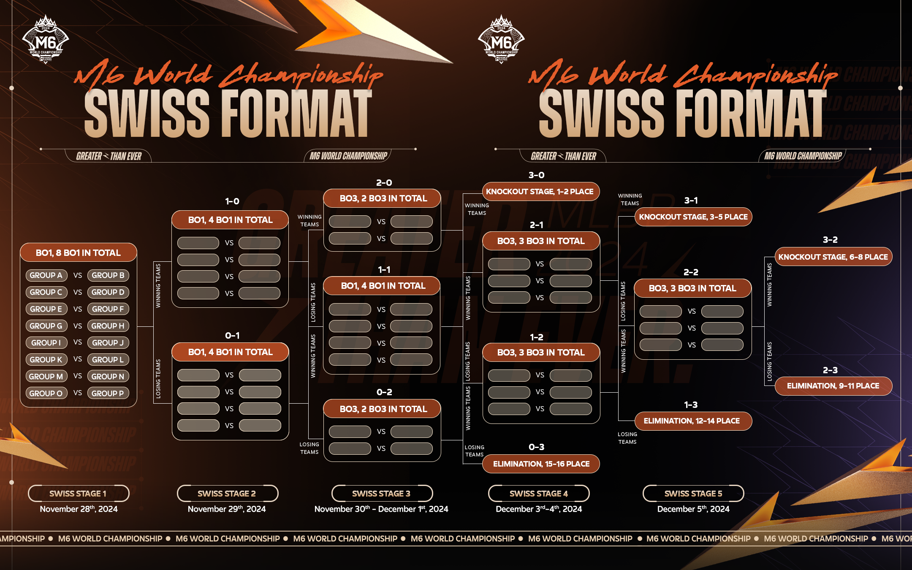

SWISS STAGE
from November 28th to December 5th, 2024
Swiss System Format
- Swiss System is a system where the teams with the same score will match each other.
- There will be 5 matches for this Swiss System.
- Teams that win 3 rounds will qualify for the playoffs stage.
- Teams that lose 3 rounds will be eliminated.
-
Round 1
- The 16 teams will be randomly matched.
- Matches will be Bo1.
-
Round 2
- The 8 teams that have a 1-0 aggregate will be randomly matched.
- Matches will be Bo1.
- The 8 teams that have a 0-1 aggregate will be randomly matched.
- Matches will be Bo1.
-
Round 3
- The 4 teams that have a 2-0 aggregate will be randomly matched.
- The winner of this match will advance to the playoffs stage.
- Matches will be Bo3.
- The 8 teams that have a 1-1 aggregate will be randomly matched.
- Matches will be Bo1.
- The 4 teams that have a 0-2 aggregate will be randomly matched.
- The loser of this match will be eliminated.
- Matches will be Bo3.
-
Round 4
- The 6 teams that have a 2-1 aggregate will be randomly matched.
- The winner of this match will advance to the playoffs stage.
- Matches will be Bo3.
- The 6 teams that have a 1-2 aggregate will be randomly matched.
- The loser of this match will be eliminated.
- Matches will be Bo3.
-
Round 5
- The 6 teams that have a 2-2 aggregate will be randomly matched.
- The winner of this match will advance to the playoffs stage.
- The loser of this match will be eliminated.
- Matches will be Bo3.